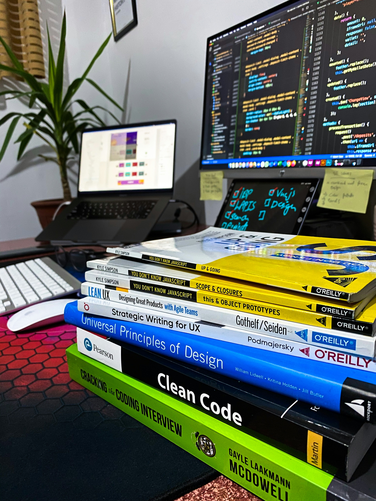

Ik ben Mustafa, een 22 jarige Software Engineering student aan de Haagse Hogeschool. Ik werk graag aan projecten waarin ik mijn technische kennis kan toepassen en uitbreiden. Tijdens mijn studie en eigen projecten heb ik ervaring opgedaan met Java, Python, PHP, HTML en CSS.
Deze combinatie van talen geeft me de vrijheid om zowel backend-logica als front-end interfaces te bouwen. Ik hou ervan om problemen op te lossen door ze te ontleden, te begrijpen en vervolgens een nette, efficiënte oplossing te maken. Code moet voor mij niet alleen werken, maar ook leesbaar en onderhoudbaar zijn. Daarom besteed ik veel aandacht aan structuur, consistentie en het verbeteren van mijn vaardigheden.
Ik vind ik het belangrijk om te blijven leren. Nieuwe technologieën, frameworks en concepten trekken altijd mijn aandacht, omdat ze me helpen om als ontwikkelaar te groeien en betere software te maken. Mijn doel is om mezelf te blijven uitdagen en steeds professioneler te worden in het vakgebied waar ik zoveel plezier uit haal.
